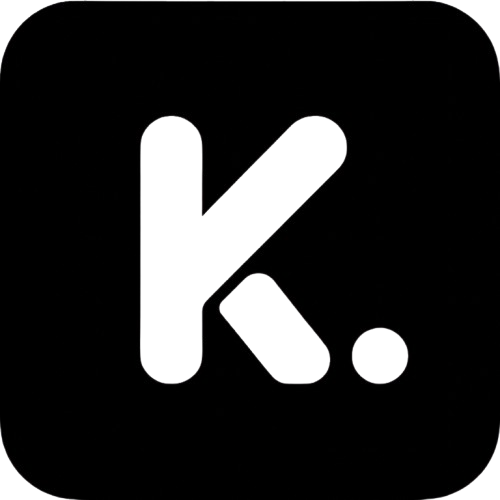

Keep / The product filmFilm transcript
0–1.9s: Less key hunting. More building. 1.9–5s: One vault. Your whole stack. Encrypted keys. Clear categories. Everything right where you left it. 5–7.6s: The right key. Right now. 7.6–10.3s: Access. On your terms. Invite your people. Choose what they can do. 10.3–12.9s: A heads-up. Before the hurry. Expiry reminders, built in. 12.9–15.4s: Late-night ideas. Same clear view. 15.4–18s: Keys kept. Ideas moving. Meet Keep.